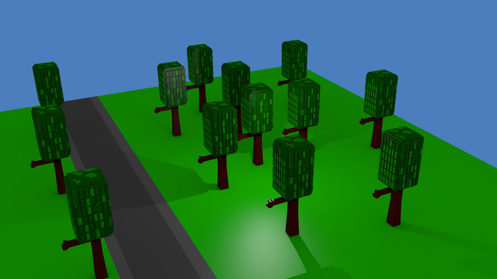
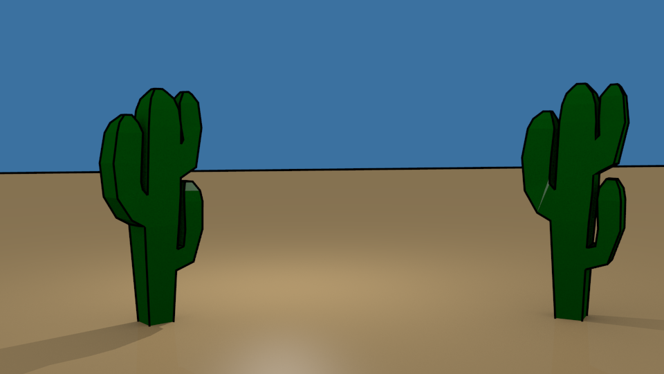
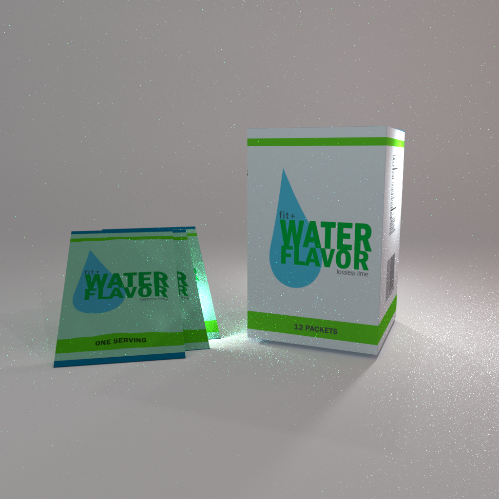
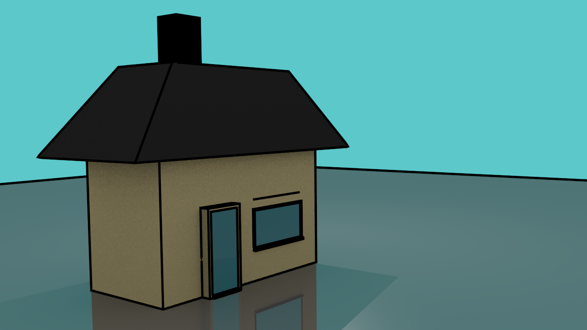
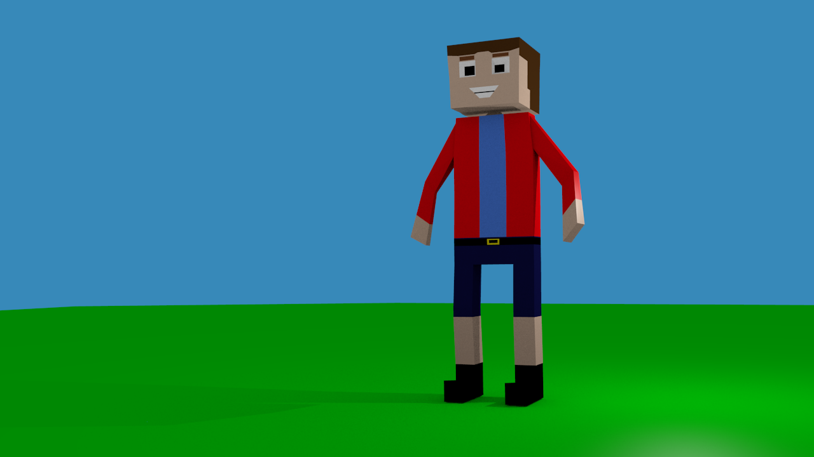

No.1:Wooden Cup

This is the best cycles thing I done in blender it was very hard but I still done it.
No.2:Aperture Science Logo from PORTAL 2

I like the game Portal 2 it is so fun and puzzling i like the idea of the portal gun and the names of the robots that is why I made this.
No.3:The Chicken from Crossy Road

This is from a game called Crossy Road. this is how to play it you have a character and when you tap the screen the character will jump forward you have to get past the obstacles and get as many jumps as you can you can also get new characters by getting coins and using the prize machine.
No.4:A Park
I made a nice little scene here its a park it took so long to make the trees and place them it was a nice scene and thats why its number 4.
No.5:Desert
Another little scene here there are two cacti and it is freestyle and I like it that way.
No.6:Products
This is another cycles thing I made its a product called water flavour it is a box and packets its not my favourite cycles thing.
No.7:House
This is an ordinary house nothing special its just something I made.
No.8:Man
This is a special man he has super powers, I think. Well he knows how to ride a skate board and he is very blocky.
No.9:T-Rex Family

This is a friendly famiy of T-Rex they don't eat you they acctually play with you!
No.10:UEFA 2016 Euros logo

The background of the logo sorta glitched but it is still good thats why its tenth.